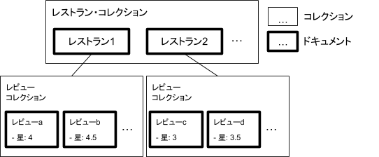
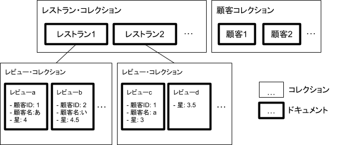

本書の目標
ここでは、Cloud Firestoreの概要を学び、レストランにレビューを追加するアプリを開発するハンズオンを行います。

学ぶこと
- NoSQLデータベースとCloud Firestoreの概要
- ユースケースを元にしたデータモデリングの方法
- Cloud Firestoreへのデータ書き込みと読み込み
- Cloud Firestore上のデータ更新に対するクライアント側のリアルタイム処理
- Firebase認証とCloud Firestoreのセキュルティ・ルール
- Cloud Firestoreのインデックス化と複雑なCloud Firestoreクエリ
必要なこと
ハンズオンを始める前に下記のものをインストールしておくこと
ここではGoogleが公開している12コマの動画シリーズをベースにNoSQLデータベースの説明とFirestoreの説明を行います。
動画の全体像
ここで紹介する動画シリーズは、GoogleのTodd Kerpelman氏による「Get to know Cloud Firestore」という動画シリーズで、Firestoreを使い始めるにあたって知っておくべきことを12回にわたって解説しているものです。本書に添付された動画は全画面表示が可能ですし、英語の字幕を自動表示する設定になっていますが、英語が苦手な人はYoutube画面の右下の設定で字幕をONにし、さらに字幕の自動翻訳を選び日本語を選択して日本語字幕を表示することも可能です。
1. NoSQLの特徴
- 従来型のリレーショナルデータベースではテーブルのスキーマが厳格に定義され、正規化という手法でデータの重複が発生しないようテーブル分割します。分割されたテーブルが互いに関係を持つ場合、一方のプライマリキーを他方が外部キーとして持つことで1対多の関係を構成します。例えば「レストラン」と「顧客」と「顧客によるレストランのレビュー（以下「レビュー」）」の3テーブルあるとして「レビュー」は「レストラン」と「顧客」を外部キーとして持つことで「レビュー」テーブルが「レストラン」と「顧客」の間の中間テーブルとして機能します。こうすることで、「レストラン」は「顧客」から0個以上の複数「レビュー」を受け、「顧客」は0個以上の複数「レストラン」に対して「レビュー」を行える、といった多対多の関係を表現することができるわけです。

- 一方、NoSQL型データベースには様々なタイプがあるものの、主に「スキーマレス」という特徴を持ち、テーブル定義のような厳格なスキーマをあらかじめデータベース側に定義する必要はありません。ただし、NoSQL型データベースでも上記のようなテーブル間のリレーションは重要概念で、クライアントアプリ側のデータベースアクセス部分（いわゆるCRUD操作する部分）を正しく開発するためにテーブル間の関係を設計する必要があります。しかし「スキーマレス」の特徴のため、アプリのリリース後にテーブルに新たなフィールドを追加したくなった場合はアプリの修正だけで対応が可能で、リレーショナルデータベースの時代のようにデータの移行を考慮しながらデータベースに対してスキーマ定義を更新するといった作業が必要ないといった利点があります。
- またNoSQL型データベースにはSQL文がありません。例えばコレクションとドキュメントのツリー構造からなるドキュメント型データベースでは、ドキュメントの階層をたどって検索を行うことで目的のドキュメントにたどりつくといったしくみでデータ操作を行います。そのため、リレーショナルデータベースでは正規化してきれいにテーブル分離する一方、同時に頻繁に検索対象となりうるフィールドをあえて親子のドキュメント間で重複して持つといった非正規化を行い、一つの検索で目的の情報にたどりつけるようにすることが、ドキュメント型データベースにおいては推奨されることがあります。例えば、レストランのレビューをリスト表示する場合で考えると、レビューにそれを行った顧客の名前フィールドをのせておくといったことです。こうすることで、レビューに登録された顧客IDから顧客ドキュメントを検索し、顧客の名前までたどるといった処理が必要なくなります。
- ただしデータの重複保存は、表示の際の検索回数を削減できますが、データの一貫性を失わせます。重複しているフィールドの更新や削除の際、重複して保存された箇所すべての更新や削除を行うことを忘れないよう注意が必要です。これらデータの重複保存の設計は、参照の頻度と更新や削除の頻度のトレードオフを考慮して行います。
- 以上のとおり、リレーショナルデータベースとNoSQL型データベースにはそれぞれ利点と欠点がありますが、NoSQL型データベースの大きな利点として水平スケーリングが可能ということが挙げられます。この特徴により、アプリが人気になりデータアクセス数やデータ量が大きく増加した場合、NoSQLだとサーバの数を増強するだけで対応（これを水平スケールという）でき、サーバのコピーによる自動スケールが可能となり、運用保守の人件費やシステムの停止リスクが削減できます。
- いままでデータベースにおいてもっとも大切と言われてきたデータの一貫性担保を一部犠牲にしたとしても、このようなクラウド時代においてNoSQLデータベースが求められる背景には、スケーラビリティへの要望やスキーマレスによる変更への柔軟に対応できるといったメリットが挙げられます。
- Cloud Firestoreでは、NoSQL型データベースの中でもドキュメント型データベースを採用しています。ドキュメント型データベースでは、コレクションとドキュメントのツリー構造で構成され、JSONの配列とオブジェクトで表現することができます。これらコレクションとドキュメントの説明は、Firebaseのデータモデルを参照してください。
2. クエリによる検索
- データベースに検索を行ってデータを取得する操作のことをクエリと呼びます。一般的なドキュメント型データベースでは、一回のクエリの検索対象となるデータの範囲は検索対象ドキュメントが所属するコレクション内のみになります。以前に説明したコレクションとドキュメントの関係を思い出してもらいたいのですが、コレクションはドキュメントを含みますが、ドキュメントに直接ドキュメントを紐づけることはできず、必ずコレクションを挟みます。例えばレストランのレビューのケースのレストランとレビューの関係は下図のようになります。

- ここで注目してもらいたいのが各レビュー・コレクションはそれぞれのレストラン・ドキュメントに紐づいているので、すべてのレビューを対象に例えば星4以上など星の数を指定して一括検索することができません。この理由としては、NoSQLデータベースの特徴と言えますが、上のようなツリー構造のため、ドキュメントのインデックスはドキュメントを含むコレクション単位で作成されるためです。そのため、同じレビューだからといって隣のコレクションも含めて検索しようとしてもそれは対象外となってしまうわけです。同一名のコレクションを横断的に検索することはSQLではできたことで、レビュー・テーブルは正規化により一つだけ存在し、インデックス化もまとめて行われているのがそれができる理由です。
- 横断的な検索を可能にするため、Firestoreではコレクショングループという機能を用意しています。サブコレクション（上図のレビュー・コレクションに相当）において検索キーとして機能させたいフィールド（上図では「星の数」フィールド）を指定することでコレクション・グループ検索が可能になります。ただし、このコレクショングループに指定するフィールド数が増えれば増えるほどデータ更新時にインデックス処理がたくさん走るため更新に時間がかかってしまうこと、またFirestoreではコレクション・グループに指定できるフィールド数が200個までという制限があります。また、Firestoreデータベースツリー内に同一名のコレクションが複数あると、それら全てを含めてインデックス化してしまうことに注意が必要です。そのため、一つのFirestoreデータベースで利用するコレクション名は重複しないよう設計しましょう。
- Firestoreはドキュメント内のすべてのフィールドが（マップ内のフィールドも含めて）自動的にインデックス化されるので、値の全文一致や上方一致、数値の大小で検索することは非常に高速で行えます。一方、SQL文の"LIKE %(値)%"のような部分一致を行う機能を持っておらず、下記のリンクのような工夫が必要です。https://qiita.com/oukayuka/items/d3cee72501a55e8be44a
- またFirestoreの別の制限として"!="が含まれるクエリや論理ORのクエリを行うことができません。例えば、星の数が満点5であるが書き込み数が少ないとフェイクかもしれないので、それらを除外する検索条件として「星の数が4以上5より少ない、もしくは、星の数が5でレビュー数が3以上のレビュー」を検索したいとしてもFirestoreではそれができません。そのため「星の数4以上5より小さいレビュー」と「星の数5でレビュー数が3以上」を検索して、クライアント側でマージして、重複データがあればクライアント側でそれを差し引きしなければなりません。もしくはこの検索条件を見越して新しいフィールド「満点疑惑」といったものを追加して、レビュー書き込み時に星の数5でレビュー数2以下の場合「満点疑惑」の値を疑惑があるといういみで「true」に設定し、検索時には星の数が4以上かつ「満点疑惑」が「false」を検索するようAND条件で検索できるよう工夫する必要があります。
- さらにFirestoreのクエリで注意が必要なケースとして「複合クエリ」が挙げられます。複合クエリとはwhere文を複数つないでAND検索を行うことをあらわしますが、このとき複数種類のフィールドで範囲比較（"<", "<=", ">", ">="）やarray-contains句（配列に値を含むかという意味）を適用する場合は、それら複数フィールドの組み合わせでインデックスを作成しておく（これを複数インデックスと呼ぶ）必要があります。Firestoreのデフォルト機能としてあらかじめドキュメントのすべてのフィールドの組み合わせで複合インデックスを作っておくという案も考えられますが、これらの組み合わせ数は莫大な数になりうるため、検索の要件にあわせて複合インデックスを行うことになっています。
- Firestoreの便利な機能としては、もしこの複合インデックスの設定がない状態でクライアントから複合クエリを実行した際、エラーメッセージとともにFirestore上の複合インデックス作成画面へのURIを返してくれるので、そのリンクをたどって設定を行い次からはエラーを回避することができます。
- 以上をふまえた上でFirestoreのクエリについてさらに確認したい場合は下記のオフィシャルドキュメントを参照してください。https://firebase.google.com/docs/firestore/query-data/queries
3. コストの考え方
- Firestoreでは、ドキュメントの読み込み数(10万回あたり0.06ドル)、ドキュメントの書き込み数(10万回あたり0.18ドル)、ドキュメントの削除数(10万回あたり0.02ドル)といったドキュメントの処理数単位で課金がなされます。
- このような課金システムの場合、リスト画面の更新を行う際、リクエストレスポンス型のアクセスを行うと、データベース上のデータ更新部分が一部であったとして、更新されてないものも含め表示対象の全データをまとめて読み込むことになるのでコスト的に大変効率が悪くなります。このあとペジネーションのところで説明しますが、Firestoreでは、データアクセスをリアルタイムデータベースとのストリームとして扱い、クライアント側のキャッシュを有効利用して更新が発生したデータのみをやりとりします。これによって差分の読み書き分だけが課金され、全データ取得型より大幅にコストを削減することができます。
- さらに、Google Cloud ConsoleのApp Engine画面にて、Firestoreの利用量と時間ごとの課金料金を確認することができます。また、利用料金の閾値を設けてそれを超えたらアラートメールを送ってくれるような設定を行うこともできるので、うまく運用保守で利用するとよいでしょう。
4. マップと配列とサブコレクション
Firestoreにおけるルール
Firestoreでは、JSONの構造における配列（[]で表す）とマップ（{}で表す）をドキュメント型リアルタイム・データベースとしてうまく操作できるようコレクション（JSON内の配列に相当）とドキュメント（JSON内のマップに相当）にうまく分離して保存管理するよう設計します。この設計をうまく行うためにはFirestoreにおけるいくつかのルールを理解しておく必要があります。
ルール1: ドキュメントには制約がある
- ドキュメント1つあたり1MB制限あります。そのため、画像ファイルなど大きなファイルはFirebase firestorageに置きファイルパスをドキュメントに保存することで回避します。
- ドキュメント1つあたり最大フィールド数は2万までの制限があります。普通1ドキュメントにそんなに大量のフィールドは必要ないでしょうが、例えばレストラン・ドキュメントにレビューデータも含めるといった設計にすると、有名なレストランではレビューデータが膨れ上がってこの制限を超えてしまうといったことがありえます。ドキュメント内のフィールドは書き込みや更新があるとその都度インデックス処理が走りますが、フィールド数が多すぎるとその処理にオーバーヘッドがかかってしまうという理由からもこの制約が設けられています。以上の理由からも、レビューのように1ドキュメントの配下に大量の配列がぶら下がるような構成の場合は、配列をコレクションとして分割するようにします。
- ドキュメント1つあたり書き込み回数は1秒間に1回のみという制限があります。異なるドキュメントへの書き込みは並列処理されますが、同一ドキュメントへの複数からの同時書き込みは並列処理され1秒間に1回のみであり、同時に行われた書き込み処理は失敗するのでクライアント側で再試行する必要があります。
ルール2: 検索結果はドキュメント全体が出力される
- アプリ表示のときタイトルだけ欲しいケースがありますが、ドキュメント内の一部のフィールドだけを取得することはできず、全フィールドデータが送られてきます。これを回避したければドキュメントを分割する必要があります。
- 同じことはセキュリティルールにも言え、ドキュメント内の一部のフィールドだけ異なるアクセス権を付与するといった操作はできません。異なるセキュリティルールを設定したい場合、たとえドキュメント内で配列構造を持たない箇所でもコレクション配下の1ドキュメントとして分割して対応します。
ルール3: 検索対象は浅い
- 一度のクエリでは、データベース全体でなくコレクション内のドキュメントだけが検索対象となります。そのためレビュー・リストに投稿した顧客名を表示したいような場合は、顧客ドキュメントの名前フィールドの情報をレビュー・ドキュメントにも用意する、といった非正規化が効果的となるでしょう。
- 2019年からコレクショングループの機能が追加され、「collectionGroud("コレクション名").where(...).getDocument)」といったクエリを使って子の情報から親を検索できるようになりました。
ルール4: 課金はドキュメントの読み書き回数でカウントされる
- Firestoreでは前述したとおりドキュメントの読み込みと書き込みの回数の合計で課金される金額が決まります。
- ルール3のため、一度に表示したい情報が複数ドキュメントに分割されていると、一つにまとまっているよりも数倍の回数の読み込みが発生して課金が発生するので注意が必要です。
- ただし、トランザクション数が少なく課金への影響が少額である部分の設計や実装にこだわるのは、設計者や開発者、運用者の人件費を考えると逆に無駄なことになりうることも念頭におき、ほどほどに設計するのがよいでしょう。
ルール5: 配列操作は奇妙である
- 例えば、arr: ['a','b','c']という配列は要素arr[1]を削除すると['a','c']に変わるが'c'に注目して考えるとarr[2]だったものがarr[1]に変わってしまいます。
- 配列要素に追加や削除があると、複数人でデータを扱う際一元的にデータ参照できないという問題があります。
- 解決策としては、ドキュメントはドキュメントIDを使って更新や削除を行うとよいでしょう。
参考）https://firebase.googleblog.com/2014/04/best-practices-arrays-in-firebase.html
5. データ構造
ドキュメント型データベースにおいて、ユースケースに適したデータ構造を設計するとき主に以下の3種類の構造から適切なものを選びます。
タイプ1. ドキュメントの一部として配列もしくはマップとして含める
- 例えば、レストラン・ドキュメントに最も星の数が多い5つのレビュー内容や最新の5つのレビュー内容をマップか配列として含めることも可能です。
- 利点としては、ドキュメントの一度の検索で表示すべき情報を取得することができることが挙げられます。
- 一方欠点としては、時間経過とともにフィールド数が増大し、更新時のインデックス処理に時間がかかるようになり、最終的には1ドキュメントあたり1MB制限や2万フィールド制限に到達してしまうことがあります。
タイプ2. オブジェクトをサブコレクションにおさめる
- 例えば、レストランのレビューは大量の書き込みが行われる可能性もあるためレストラン・ドキュメントのサブコレクションに含めるとよいでしょう。
- 利点としては、リストが大きくなっても親ドキュメントのサイズが変わらず、複数のサブコレクションにまたがる検索をする場合は、コレクション グループ を設定するとよいでしょう。
- 一方、欠点としては、ドキュメントをまたがって検索することが常である場合にも読み込み回数がドキュメント数分発生してしまうことが挙げられます。
タイプ3. オブジェクトをルートレベルのコレクションにおさめる
- 例えば、レビューを書き込む顧客はこのアプリケーションのユーザであり、例えばアプリに出前機能が追加された際にも再利用する必要があるかもしれません。そういう意味でもルートレベルのコレクションとして整理するとよいでしょう。
- 利点としては、ルートレベルのコレクションはリレーショナルデータベースにおける正規化の考え方と同じく再利用しやすく、アプリの作り方によらずデータの一貫性が保たれ安心できます。
- 一方欠点としては、データが階層的になっていることから、データベースが拡大するにつれ、データの取得が難しくなる可能性があります。例えば、20才未満の顧客が4以上の星をつけたレストランを検索するのは簡単ではないので、必要となりそうな検索条件にあわせてレビュー・ドキュメントにも重複して顧客情報を持つよう設計するとよいでしょう。
- データ構造については、下記のオフィシャル・ドキュメントも参照するとよいでしょう。
https://cloud.google.com/firestore/docs/concepts/structure-data?hl=ja
6. セキュリティルール
- Firestoreでは、データベースのツリー構造のドキュメント位置を指定して誰がCRUD（Create:作成、Read:読み込み、Update:更新、Delete:削除）できるかを指定します。これらのアクセス権の指定はセキュリティルールといい、拡張子".rules"のファイルに設計してFirestoreにデプロイして適用します。
- データベース内で、フィールドレベルのアクセス権をIF文を使った複雑な条件文と共に直感的にルール化できるのは、リレーショナルデータベースにはない機能です。APIの開発をしなくてもクライアントから共通化されたSDKを使ってリアルタイムデータベースとしてアクセスできる、といったことを含めて、Firestoreはモバイル開発に最適なデータベースのひとつであると言えるでしょう。
- このセキュリティルールでは、データベースのルートからのドキュメントへのパスを指定し、ドキュメントは{xxID}や{xxID=**}のようにID名（自由に命名できます）とワイルドカードを使って指定します。ここで{}内で指定した変数名(xxID)はドキュメントをあらわし、そのドキュメントに含まれるフィールドをキーにしてIF文の中でアクセス条件を指定することができます。またルールの中では「get(ドキュメントへのパス)」を指定して、指定したドキュメントのフィールド値にもアクセスできます（例えばログインユーザのロールなど）。
- これらのルールは複雑で再利用したくなる場合がありますが、カスタムファンクションという関数を定義して、例えばGoogleアカウントかどうかをチェックするといった処理を関数化してルールファイル内で再利用することができます。
- セキュリティルールはアクセス権の設定が主な目的ですが、このしくみを使うと書き込みや更新時に空白を受け付けないフィールドを指定したり、メールアドレスの形式のチェック、さらには1顧客が書き込みできるレビューの数を100件までに制限するといったデータバリデータとして利用することも可能です。そのため、プロジェクトごとにどこまでセキュリティルールに設定を行うかをあらかじめ決めておくとよいでしょう。
- ルールファイルはアプリ内で想定通り動作することを担保するために単体テストを自動化するよいでしょう。その場合、Firebaseエミュレータを使ってテストすることをおすすめします。そうすれば、自動テストのために課金が発生するといったことを避けられます。
- セキュリティルールについては、下記のオフィシャル・ドキュメントも参照するとよいでしょう。
https://cloud.google.com/firestore/docs/security/get-started
https://firebase.google.com/docs/reference/security/database
7. データのペジネーション
- 一般的に、アプリケーションが表示に必要なレコード以上のデータを取得すると無駄な読み込みに課金が発生し、ネットワークを流れるデータ量も増えるため、サーバ側でペジネーションを行うことが推奨されます。
- Firestoreではストリーミング・データベースとして機能し、高度なペジネーション機能を提供します。というのも、クライアントとストリーミングとしてコネクションを維持している場合、常にクライアント側のキャッシュとの差分をチェックして更新分だけをやりとりしてくれる機能を持っています。また、リストを表示する画面があったとして、画面に表示されていない表の下部や上部をスクロール操作で表示したいとき、リアルタイムデータベースはスクロール操作にあわせて必要なデータをストリーム取得してくれます。
- 具体的には「Query.start(after:previousDoc)」といった関数が、いま表示されているドキュメントの続きををよしなに判断して取得します。このようにFirestoreのSDKを使うことで、他のクライアントがコレクションに新たなドキュメントを追加したり、既存のドキュメントを削除したりする場合にも、SDKがよしなに差分データだけを取得して画面に反映してくれるため、開発者は難しいことを考えることなくリアルタイムデータベースの効率的で高度な機能を実装できます。
- 例えばFlutterでは、「Firestore.instance.collection('コレクション名').snapshots()」といった関数でストリーム型でデータを取得し、ListViewやGridViewで表示させることでペジネーションの実装が可能です。
8. トランザクション処理
- Firestoreはトランザクション処理を実現します。例えば、顧客ドキュメントの名前フィールドを更新する際、レビュードキュメント上においたレビューを追加した顧客名も同時に更新しなければならないことがあります。このような場合、一連の更新作業はひとつのトランザクションとし、すべてが成功した場合にのみ更新を確定（コミット）するといった機能が必要です。そうしなければ、途中の更新に失敗した場合データに不整合が発生してしまいます。
- Firestoreにおけるトランザクションの考え方には以下の2種類があります。
- バッチ書き込み：複数ドキュメントに同時書き込みを行いたいときクライアントはそれらをまとめて送り、処理中ドキュメントはロックされトランザクションを実現
- 楽観的平衡性制御：特にモバイルデバイスでは急なネットワーク停止がありうるため、クライアントからのロック指示は行わず、読み込み→書き込み→読み込み→一貫性チェック→コミットといった順でトランザクション処理を行います。失敗の際は、データベースはロールバックし、クライアント側は再実行で対応します。
- トランザクション対応機能として、ドキュメントに数値フィールドを持ち、その増加と減少にトランザクション処理を施したい場合、FieldValue.increment()を使うと簡単にトランザクションを担保できます。
参考）
- オフィシャルドキュメント：https://firebase.google.com/docs/firestore/manage-data/transactions?hl=jai
- Firestoreでのトランザクションの考え方、必要性：https://qiita.com/1amageek/items/2eff436fb69bea5875ea
- FieldValue.increment()による高速トランザクション：https://qiita.com/1amageek/items/665df5a6d9921319e300
9. オフラインサポート
- Firestoreはオフラインをサポートしており、クライアント側にFirestore SDKを使うとオフライン時の読み込みはキャッシュが使われ、書き込みもローカルに保存されオンラインになったら順番にFirestoreに反映されるといったことが実現可能です。
- これらの機能は大変高度なものであり、実装するには大変な工数がかかり考慮点も多数ありますが、Firestoreではデフォルトでこれらの機能が利用できますです。
10. リアルタイムか一括フェッチか？
- リアルタイムデータベースの操作について下記の迷信がありますが、Firestoreはこれらの迷信を覆します。そのためFirestoreにおいてはデフォルトでリアルタイム機能を使うよう設計し開発をすすめることをおすすめします。
- コーディングが難しい
いいえ。Firestore用SDKがストリーム処理をしてくれるので使い方を覚えれば実装は簡単です。
- リアルタイム処理だと読み込み数が増え課金が増える
いいえ。更新された分だけが読み込み数にカウントされ、むしろ全部を読み込む方式の方が課金されます。リアルタイム処理の方が一般的に課金が少なくなります。
- デバイスの電力消費が大きい
いいえ。リスナーを常駐させることは電力消費を増やしません。
11. サーバレスの概要（Cloud Functions）
- Firesoteは、Firebase上のドキュメント型リアルタイムデータベースを提供するサービスであり、リレーショナルデータベースをモバイルアプリから利用する際に通常必要となるAPIの開発を必要としません。しかし、異なるドキュメントに重複して所有されるフィールドの更新時に一貫性を持たせるための更新処理を実行したい場合や古いデータをまとめて削除するといった運用バッチを実行したい場合など、バックエンドでまとめて処理を行いたいといった要望があります。
- Firebaseでは、そのような場合に利用できる機能としてFirebase Functionsというサービスを提供しています。また、Firebase Functionsは一過性のバッチ処理を実行するものであるため、コンピュータ上にプロセスが常駐しないサーバレス型で実装されています。そのため、使った分だけの課金であるのはもちろん、プロセスの常駐に必要なCPUやメモリ、ストレージへの課金がまるまる削減されます。
- Firebase Functionsでサポートされるプログラミング言語はJavaScriptとTypeScriptですが、バグを防ぐためにも型の定義がしっかりしているTypeScriptの利用がおすすめでJavaScriptに似た言語のため言語の習得も容易です。
- Firebase Functionsは想定通り動作することを担保するために結合テストを自動化するよいでしょう。その場合、Firebaseエミュレータを使ってFirestoreのエミュレータとつなげてテストすることをおすすめします。そうすれば、自動テストのために課金が発生するといったことを避けられます。
- Firebase Functionsの詳細については、下記の動画「TypeScriptを使ってCloud Functionsを始めよう」も参照するとよいでしょう。
https://www.youtube.com/watch?v=DYfP-UIKxH0
12. Cloud Functionsの5つの利用パターン
- Cloud Functionsをどのような場合に利用すればよいか、5つのパターンにまとめると以下の通りです。ただし繰り返しになりますがリアルタイムデータベースのメリットが享受できなくなる欠点があることは考慮すべきでしょう。
- セキュリティルールを単純化したい場合：複雑なアクセスが関数にまとめられるのでセキュリティルールにこれを指定することでことたります。
- 分散データを更新したい場合：例えば、顧客の名前フィールドを更新するとき、同時にレビュー上の編集者の名前フィールドも更新しなければならない場合、Cloud Functionsで更新することで一貫性を保つことができます。
- 定期メンテナンスを行いたい場合：日次でメンテナンス用のcronを実行するようなイメージです。例えば、レストランの星の数の平均を日次で計算してレストランの平均星の数フィールドに更新をかける、といったものです。
- レガシーデータベースとの連携：レガシーなデータベースが別にあり、Firestoreにデータをレプリケーションしてアプリの読み取り用に使う、といったケースです。
- カスタムAPIの作成：用途限定でCloud Functionsを作成するとクライアントアプリの実装がシンプルになり効率化するといったメリットがありえますが、オフライン機能が失われるといったデメリットとのトレードオフを考慮して採用を決めるとよいです。
通常データモデルの設計方法として、ユースケースからデータモデル候補を抜き出しデータモデル設計を行います。Firestoreを使う場合も同じく、まずはユースケースからデータの候補を抜き出し、ドキュメントの単位とドキュメント内のフィールドを決めていきます。また、ドキュメントとコレクションの関係を整理します。ざっくり方針がきまったら、具体的なデータを想像し、JSONの形式でまとめます。最後にユースケースから検索条件とデータ作成・更新・削除時の条件、セキュリティ・ルール（ここには必須フィールドを含む）を整理し、このデータモデルでうまく実現できるかをチェックしてデータモデルの完成です。Firestoreのデータモデルはスキーマ定義が必要ありませんので、データモデルの設計書はこの程度にとどめて、クライアント側の実装、複合クエリとコレクショングループの設定、セキュリティルールの実装、Cloud FunctionsのTypeScriptの実装をそのまま詳細設計資料として扱うとよいでしょう。
1. ユースケースからデータの候補を抽出する
顧客がレストランに星の数とコメントでレビューを行うアプリを例に、ユースケースを以下にまとめます。データの候補は青字にしています。
1. 顧客がアプリにログインする |
2. レストランのリストが表示され、料理の種類や住所、星の数の平均でソートや検索ができる |
3. レストランのリストから一つを選ぶとレストランの詳細が表示できる |
4. レストランのリストから一つを選ぶとレストランの詳細が表示できる |
5. レストランの詳細には店名、料理の種類、住所、星の数の平均のほか、そのレストランに対するレビューがリスト表示され、星の数やコメントの内容でソートや検索ができる |
6. またレストランの詳細ではそのレストランのレビューが登録できる |
7. レビューでは星の数とコメントが登録でき、登録更新時にレストランの星の数の平均が更新される |
8. レストランのレビューは顧客自身が登録したレビューについては編集と削除ができる |
以上のユースケースからデータの候補を「ドキュメント（フィールド1、フィールド2、‥）」と表現すると下記のように整理できます。
- 顧客（メールアドレス、名前、アイコン）
- レストラン（店名、料理の種類、住所、星の数の平均）
- レビュー（星の数、コメント）
2. データをドキュメントとコレクションのツリー構造にする
前章「NoSQLとFirestoreについて」の「5. データ構造」を参考に、1で抽出したデータをドキュメントとコレクションのツリー構造にします。
- レストランドキュメントと顧客ドキュメントはルートレベルコレクションに納める
- レビュードキュメントはレストラン・ドキュメントのサブコレクションに納める
- レビュードキュメントに顧客フィールドの一部をマップとして納める

3. データのサンプルをJSON形式で表現する
ドキュメントとそのフィールド、コレクションとそれらの関係について方針が決まったら、より具体化するためにサンプルデータを作ってJSON形式で表現します。
2で作成したツリー構造をJSON形式であらわすとき、コレクションは配列（[]）に名前をつけて表現し、ドキュメントはマップ（{}）にIDをつけて表現します。
{
"restaurants": [
{
"name": "ガスト東岡崎店",
"type": "洋食",
"address": "愛知県岡崎市大西１丁目１−１０",
"logo": "https://www.skylark.co.jp/site_resource/gusto/images/logo.svg",
"star": 3.2
},
{
"name": "デニーズ東岡崎店",
"type": "洋食",
"address": "愛知県岡崎市美合町 字五反田２５－１",
"logo": "https://sozainavi.com/wp-content/uploads/2019/10/dennys.jpg",
"star": 3.5
},
{
"name": "大戸屋ごはん処岡崎店",
"type": "和食",
"address": "愛知県岡崎市井田西町１−１１",
"logo": "https://sozainavi.com/wp-content/uploads/2019/10/ootoya.jpg",
"star": 3.5
},
{
"name": "和食さと岡崎店",
"type": "和食",
"address": "愛知県岡崎市上里２丁目１−１",
"logo": "https://sato-res.com/assets/tile/sato.png",
"star": 3.5
},
{
"name": "カレーハウスCoCo壱番屋岡崎上地店",
"type": "カレー",
"address": "愛知県岡崎市上地３丁目５１−６",
"logo": "https://www.ichibanya.co.jp/assets/images/common/ogp.png",
"star": 3.6
},
{
"name": "スシロー岡崎上和田店",
"type": "寿司",
"address": "愛知県岡崎市天白町東池１５−１",
"logo": "https://www.akindo-sushiro.co.jp/shared/images/ogp.png",
"star": 3.5
},
{
"name": "くら寿司北岡崎店",
"type": "寿司",
"address": "愛知県岡崎市錦町２−１２",
"logo": "https://www.watch.impress.co.jp/img/ipw/docs/1230/499/kura1_s.jpg",
"star": 3.5
},
{
"name": "モスバーガー岡崎大西店",
"type": "ハンバーガー",
"address": "愛知県岡崎市大西１丁目１６−７",
"logo": "http://www.wing-net.ne.jp/image/kamiooka/store/storage/w250/mos.png",
"star": 3.9
},
{
"name": "マクドナルド岡崎インター店",
"type": "ハンバーガー",
"address": "愛知県岡崎市大平町石丸６０−１",
"logo": "https://sozainavi.com/wp-content/uploads/2019/10/mcdonalds.png",
"star": 3.3
},
{
"name": "かつや愛知岡崎インター店",
"type": "とんかつ",
"address": "愛知県岡崎市大平町新寺25",
"logo": "https://www.arclandservice.co.jp/katsuya/wp-content/themes/arclandservice-group/assets/img/katsuya/common/logo.svg",
"star": 3.6
}
],
"users": [
{
"name": "鈴木一郎",
"email": "ichiro@test.com",
"url": "https://meikyu-kai.org/wp-content/uploads/2020/01/51_Ichiro.jpg"
},
{
"name": "佐藤二郎",
"email": "jiro@test.com",
"url": "http://www.from1-pro.jp/images/t_10/img_l.jpg?1597426029"
},
{
"name": "北島三郎",
"email": "saburo@test.com",
"url": "https://cdn.asagei.com/asagei/uploads/2016/08/20160810kitajima.jpg"
}
]
}
3. 検索条件を確認する
ユースケースを確認しながら、上で設計したコレクションとドキュメントのデータ構造で必要な検索が実行できるかを確認します。実行できない場合はデータ構造を修正します。Firestoreでは下記の考慮点があることを忘れないようにしてください。
検索1. レストランをリストする
検索2. 料理の種類や住所、星の数の平均でソートや検索ができる
4. データの作成・更新・削除処理と条件をまとめる
検索条件
5. セキュリティ・ルールをまとめる
検索条件
あああ。
Firebaseプロジェクトの作成
あああ
匿名認証の有効化
あああ
Cloud Firestoreの有効化
あああ
あああ
あああ
あああ。
データモデル
あああ
レストランデータの追加
あああ
あああ
あああ
あああ
あああ
あああ
あああ
あああ